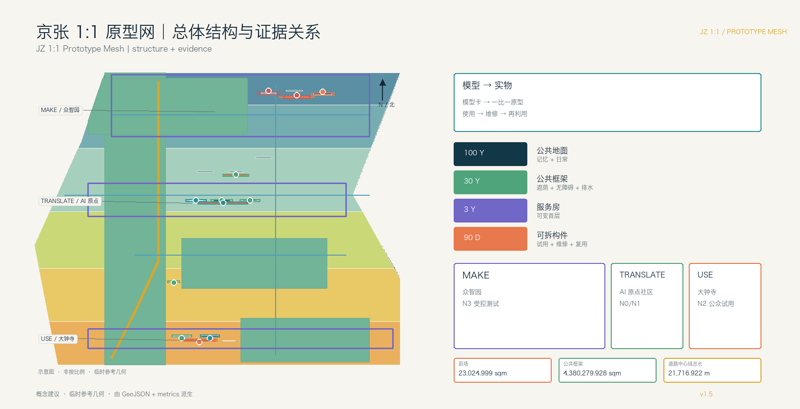
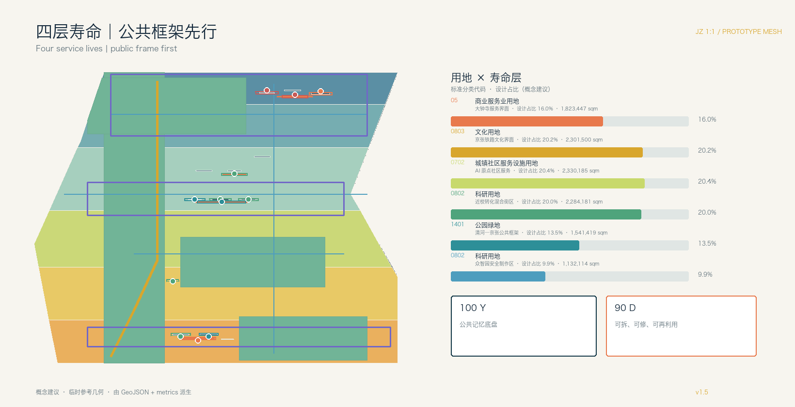
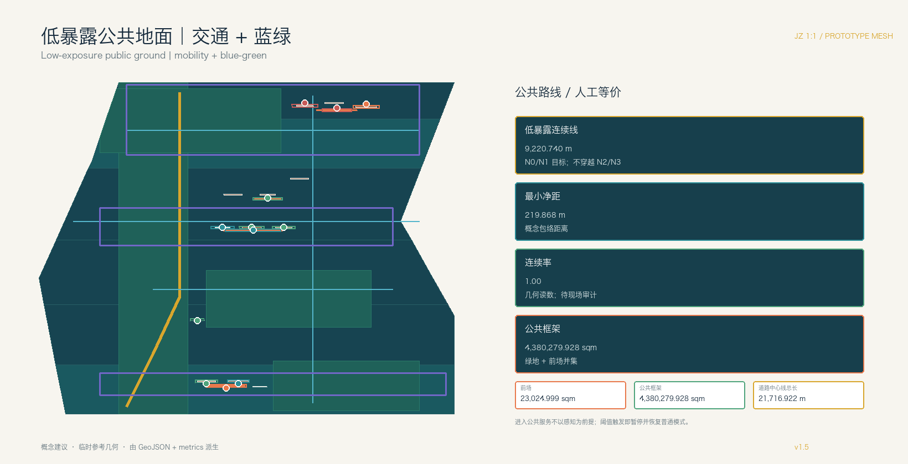
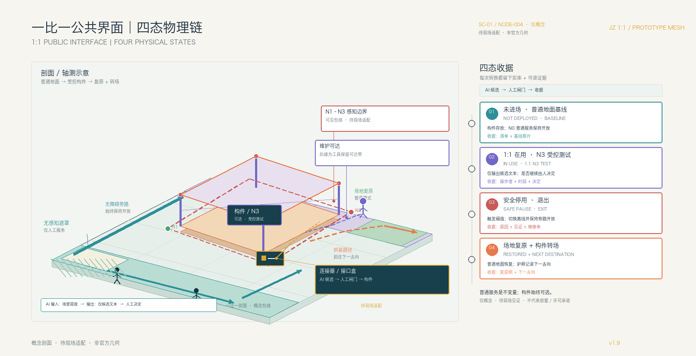

总览地图与核心指标
总览地图、用地分区、建筑、交通慢行、蓝绿公共空间和更新项目均由同一组 GeoJSON 派生。

三层范围与四层寿命
三层范围把统筹研究、总体设计和重点区域落实为长寿命公共地面、公共框架、服务房与可拆构件。
公共框架
遮荫 + 无障碍 + 排水 + 照明服务房
可变首层 + 人工窗口可拆构件
试用 + 维修 + 复用 + 退役重点区域 / MAKE → TRANSLATE → USE
三处重点区域角色不同，但共享原型护照和感知地籍字段。
众智园
- 原型房与原型院
- 材料护照
- N3 受控测试
AI 原点社区
- 可变服务房
- 人工与离线窗口
- N0/N1 低暴露
大钟寺
- 采用门廊
- 维修再利用台
- N2 可见公众试用
用地分区、交通慢行与蓝绿公共空间
建筑和道路几何仍为概念建议；权属、控规、红线、市政、文保、消防与防洪待正式资料。


AI 感知地籍
每个原型节点登记感知、时段、留存、人工交接、遮罩、到期和普通人工/离线等价服务。
| ID | 原型角色 | 等级 | 时段 | 留存 | 人工交接 |
|---|---|---|---|---|---|
| NODE-001 | park_review_face | N1 | 08:00-20:00 | none | human_culture_review |
| NODE-002 | offline_service_room | N0 | offline_only | none | service_desk |
| NODE-003 | translation_room | N1 | 09:00-18:00 | none | ip_service_reviewer |
| NODE-004 | prototype_room | N3 | 09:00-17:00 | event_log_30d | safety_reviewer |
| NODE-005 | interface_box | N1 | 09:00-18:00 | aggregate_24h | energy_operator |
| NODE-006 | public_feedback_desk | N2 | event_only | event_log_7d | public_operations_team |
| NODE-007 | prototype_passport_counter | N3 | 09:00-17:00 | event_log_30d | accessibility_reviewer |
| NODE-008 | offline_human_service_porch | N0 | offline_only | none | human_service_desk |
| NODE-009 | adoption_retirement_desk | N2 | 10:00-20:00 | aggregate_24h | venue_operator |
| NODE-010 | repair_reuse_workbench | N0 | maintenance_only | none | maintenance_team |
| NODE-011 | ninety_day_public_segment | N1 | 07:00-22:00 | aggregate_24h | mobility_reviewer |
| NODE-012 | long_life_frame_interface_box | N1 | event_only | aggregate_24h | park_operator |
| ZONE-001 | N1 | 08:00-20:00 | none | human_culture_review | |
| ZONE-002 | N0 | offline_only | none | service_desk | |
| ZONE-003 | N1 | 09:00-18:00 | none | ip_service_reviewer | |
| ZONE-004 | N3 | 09:00-17:00 | event_log_30d | safety_reviewer | |
| ZONE-005 | N1 | 09:00-18:00 | aggregate_24h | energy_operator | |
| ZONE-006 | N2 | event_only | event_log_7d | public_operations_team | |
| ZONE-007 | N3 | 09:00-17:00 | event_log_30d | accessibility_reviewer | |
| ZONE-008 | N0 | offline_only | none | human_service_desk | |
| ZONE-009 | N2 | 10:00-20:00 | aggregate_24h | venue_operator | |
| ZONE-010 | N0 | maintenance_only | none | maintenance_team | |
| ZONE-011 | N1 | 07:00-22:00 | aggregate_24h | mobility_reviewer | |
| ZONE-012 | N1 | event_only | aggregate_24h | park_operator |
AI 场景
12 张卡把空间、数据边界、运营主体、非 AI 等价、停机阈值与退役路径连成一体。
无障碍多语言导视
MAKE / N3
可调公共家具
MAKE / passport
离线服务界面
MAKE → TRANSLATE
近校成果转译房
TRANSLATE / N1
社区照护导航
human + offline
共享制作课程
3-year room
站前终端采用试用
USE / N2
维修再利用台账
USE / N0
铁路文化导览
rights-cleared
AI 慢行诊断
field retest
低速服务设备
human takeover
公共韧性提示
aggregate only
任务覆盖与自检状态
任务覆盖公告 1.3、1.4、1.5、agent.1—agent.6、强制标准和 15 项设计深度。
来源
官方公告、清权任务书、仓库来源登记、标准快照与临时边界文件。
sources.json / standard_matrix.json
假设
正式几何、权属、控规、建筑普查、交通、市政、文保、消防、防洪与运营资料待补。
assumptions.json / design_depth_matrix.json
自检状态
最终编辑后重新运行确定性、空间、视觉、专业、双语和 manifest 校验。
self_check.json / compliance_matrix.json
公平性与运营证据
以下指标已写入 metrics.json，但尚无现场服务、夜间运营或维护台账；正式试点前按人群与时段建立基线。
面积口径与网络证据
0.20% 只统计四个对象尺度前场，不是全域公共空间率；长寿命公共框架与道路关系线另行报告。所有数值来自临时概念几何，待正式边界、权属和红线资料到位后整体复算。
public_forecourt_count
4
public_space_area_sqm · 前场
23,024.999 sqm
public_frame_ratio · 公共框架
38.38%
road_centerline_length_m · 关系线
21,716.922 m
road_connector_length_m · 连接线
12,496.182 m
land_use_polygon_count · 用地多边形
6
三项产业原型 / 四态验收链
停止是公共空间的可见状态转换：AI_SERVICE_ZONE 退回 N0，普通服务不断，构件复原或转场。这里的 100% 只表示六字段协议已文档化，不表示试点性能。
未进场 → 1:1 在用 → 安全停用 → 场地复原 / 构件转场
| 原型 / 试验湾 | 基线与入场 | 通过证据（拟议） | 停止触发 | 人工/离线等价 | 恢复 / 退役 |
|---|---|---|---|---|---|
| 无障碍多语言导视 MAKE 原型房 + 原型院 |
AI 候选词/语音清权；无障碍与触觉审阅；静态导视先可用 | 分组见证完成路线；误导记录闭合 | 误导、遮挡、语音冲突或旁路不可用 | 静态多语导视、纸图、人工引导 | N0；恢复基线，修订复审或转场 |
| 可调公共家具 MAKE 原型院 |
AI 辅助尺寸候选；材料护照；结构/无障碍/耐候审阅；通行带畅通 | 实体人因适配、稳定、可维修；台账完整 | 不稳定、夹伤、阻塞或缺记录 | 固定座椅和无遮挡路径 | N0；隔离恢复，修复复审或复用 |
| 离线服务界面 MAKE → TRANSLATE 服务房 |
版本化公开信息；核心任务；人工席位与纸面演练；数据最小化 | 断网/拒答时核心任务仍由人工/纸面闭环 | 任一任务失去非 AI 路径，或版本/责任人不明 | 人工窗口、纸面表单、电话/现场转介 | N0；关闭界面保留人工，修复复审或撤下 |
场景控制登记 / 12 对节点—分区
每张场景卡都公开 AI 输入、模型角色、运营者、独立复核、暂停触发、人工等价和退役动作；字段是待现场见证的概念模板。
| ID / 场景 | AI 输入与角色 | 运营者 / 独立复核 | 暂停触发 | 人工等价 | 退役动作 |
|---|---|---|---|---|---|
|
NODE-001
铁路文化导览 |
rights_cleared_railway_text_and_public_questions suggested multilingual routes and questions; curator decides published text |
heritage_interpretation_team heritage_rights_and_accessibility_reviewer |
copyright_or_historical_claim_challenge / route_conflict / accessible_bypass_missing | curated_static_panel / paper_map / human_guide | remove_ai_layer_restore_cleared_panel_or_relocate_reusable_kit |
|
NODE-002
社区服务房 |
versioned_public_service_guides_only optional retrieval of public information; never diagnoses or stores case files |
community_service_desk care_service_privacy_and_accessibility_reviewer |
wrong_service_route / sensitive_data_request / offline_queue_failure / access_complaint_unresolved | staffed_counter / paper_form / telephone_or_in_person_referral | switch_interface_off_keep_counter_open / repair_content / remove_kit |
|
NODE-003
近校成果转译房 |
licensed_research_abstracts_and_public_patents maps research to candidate room programs; rights holder approves display |
research_translation_and_ip_desk rights_holder_and_ip_reviewer |
licence_withdrawal / misattribution / campus_privacy_risk / manual_review_overdue | staffed_translation_desk / printed_brief / appointment_referral | unpublish_claimed_content / retain_neutral_room / transfer_components_to_reuse_catalogue |
|
NODE-004
原型房：无障碍多语言导视 |
cleared_synthetic_test_set_and_model_card generate candidate wayfinding variants for controlled 1:1 test only |
prototype_safety_steward independent_safety_and_accessibility_reviewer |
misdirection / obstruction / audio_conflict / accessible_bypass_missing / red_team_failure | static_signage / tactile_map / human_steward | set_zone_to_N0 / restore_baseline_signage / repair_or_disassemble_for_reuse |
|
NODE-005
共享制作课程 |
public_course_materials_and_device_telemetry_aggregate_only suggest session sequence and interface settings; instructor controls equipment |
shared_making_course_steward energy_safety_and_child_safeguarding_reviewer |
unsafe_device_state / energy_or_heat_alarm / unconsented_participant_record / instructor_override_missing | printed_curriculum / manual_tool_checkout / instructor_led_session | power_down_interface / retain_room_for_manual_course / repair_or_redeploy_kit |
|
NODE-006
公共韧性提示 |
aggregate_weather_water_and_facility_status_plus_public_questions draft visible resilience cues; duty staff verifies every notice |
public_operations_feedback_team public_interest_and_privacy_reviewer |
stale_warning / false_alarm / privacy_boundary_breach / duty_staff_unavailable | manual_notice_board / staffed_information_point / official_alert_channel | remove_generated_notice / retain_manual_signage / archive_event_record_without_personal_data |
|
NODE-007
原型院：可调公共家具 |
model_card / material_passport / user_requested_adjustment_brief propose adjustable furniture dimensions for a controlled physical test |
prototype_passport_counter_and_material_steward structural_accessibility_and_material_reuse_reviewer |
instability / pinch_hazard / route_obstruction / missing_component_record / repair_tool_inaccessible | fixed_seating / unobstructed_route / staffed_adjustment_help | set_zone_to_N0 / isolate_furniture / restore_fixed_seating / disassemble_for_reuse |
|
NODE-008
公共街段：离线服务界面 |
none_by_default / versioned_public_guides_when_opted_in optional display aid only; core tasks must run without a model |
offline_human_service_desk public_service_and_language_access_reviewer |
core_task_without_human_path / version_or_owner_unknown / queue_or_egress_failure | paper_form / staffed_counter / phone_or_in_person_referral | keep_N0_offline_mode / remove_optional_interface / retain_service_room_and_clear_route |
|
NODE-009
站前终端采用试用 |
public_terminal_content / voluntary_user_feedback / maintenance_observations compare comprehension and repair demand; never gate access to the station |
station_front_adoption_and_retirement_desk mobility_heritage_and_public_safety_reviewer |
accessible_route_blocked / crowd_conflict / heritage_rights_complaint / manual_service_capacity_shortfall | staffed_information_desk / paper_map / ordinary_wayfinding | return_frontage_to_ordinary_mode / remove_terminal / log_next_destination_in_passport |
|
NODE-010
维修与再利用台账 |
component_passports / fault_reports_without_personal_identifiers suggest repair priority and next compatible destination; technician decides |
repair_and_reuse_ledger_team maintenance_and_worker_safety_reviewer |
unsafe_repair_condition / missing_material_origin / worker_exposure / destination_unconfirmed | paper_parts_ledger / manual_inspection / technician_work_order | retain_N0_manual_ledger / quarantine_component / repair_reuse_or_material_recovery |
|
NODE-011
AI 慢行诊断 |
anonymous_counts / manual_walk_audit / opt_in_public_feedback flag possible walking gaps; professionals decide any sign or layout change |
mobility_and_accessibility_field_team independent_accessibility_and_traffic_reviewer |
counting_bias / accessible_route_gap / privacy_objection / weather_or_event_conflict / manual_review_overdue | manual_walk_audit / paper_map / staffed_route_assistance | disable_sensing / restore_previous_signage / remove_90_day_kit / publish_retest_note |
|
NODE-012
低速服务设备试用 |
device_status / weather / aggregate_route_conflicts suggest low-speed service window; human operator retains takeover |
low_speed_service_device_steward public_safety_mobility_and_park_reviewer |
person_device_conflict / speed_or_weather_limit / takeover_unavailable / route_obstruction | human_carry_or_cart_service / ordinary_delivery_window / staffed_help_point | stop_device_return_frame_to_N0 / remove_device / repair_or_redeploy_after_review |
N0 return means ordinary service continues; control-record completeness is not measured performance.
实施登记 / 三期交接
三期包络不只是面积：候选资产主体、运营角色、独立复核、建议资金类型、许可门、停止信号、维护责任和容量依据均可交接；角色和时限仍待确认。
| 项目 / 期次 | 空间最小条件 | 候选责任 / 独立复核 | 建议资金 / 许可门 | 停止信号 | 维护证据 |
|---|---|---|---|---|---|
| JZ-01 公园审阅面 P1 |
无障碍旁路、遮荫、可撤展陈；尺寸待测 | 公园资产主体 + steward 无障碍/公共服务复核 |
公共地面维护/小修 边界、权属、文保、消防、防洪 |
旁路中断即 N0 | 开放日志、步行记录、维修单 |
| JZ-02 众智园原型院 P3 |
原型房、半室外院、材料护照墙；容量待基线 | 创新资产主体 + prototype operator 结构/安全/复用复核 |
可逆试点/小修 权属、河道、消防、结构、网络安全 |
阈值触发即停测 | 入场清单、红队记录、拆装演练 |
| JZ-03 原点服务房 P2 |
人工窗口、纸面路线、照护角、清晰疏散 | 社区服务主体 + room operator 照护/隐私/语言可达性复核 |
共享公共服务/课程小修 校园边界、许可、夜间安全 |
核心任务不得失去离线路径 | 离线演练、版本签名、投诉结案 |
| JZ-04 大钟寺 USE 门廊 P1 |
站前门廊、维修台、无障碍接驳；排队待观测 | 站前资产主体 + interface operator 交通/遗产/安全复核 |
可逆公共界面试点 轨道、交通、文保、消防、市政 |
冲突或人工容量不足即撤回 | 步行复核、人工日志、退场排演 |
| JZ-05 维修再利用台 P2 |
存放、维修、清点和安全装卸边界 | 设施主体 + repair lead 工人安全/材料来源复核 |
维护与材料回收 职业安全、危废、装卸 |
不安全工序即隔离 | 工单、部件护照、去向收据 |
| JZ-06 原型交换周 P1 |
只占已核验前场；活动外恢复普通通行 | 活动 operator 公共利益/无障碍独立复核 |
公共活动/可逆布置 活动、消防、人流、版权 |
挤占普通服务即缩小/取消 | 占用时数、人工替代、复原记录 |
100% 仅表示登记字段完整，不表示主体、许可、容量或资金落实。
公共权利与责任
任何人都可以提出暂停；人工、纸面、电话路径与可选 AI 并行。时限是待专业校准的起点，不是行政承诺。
| 权利动作 | 启动 / 受理 | 建议时序（待校准） | 保护与等价路径 |
|---|---|---|---|
| 暂停请求 | 使用者、邻里、维护人员；窗口/纸簿/电话/数字 | 当班确认；先切 N0，再独立复核 | 普通服务不断；无障碍旁路和纸面说明保留 |
| 投诉与临时补救 | 公共空间 operator + accountable owner | 建议 24h 临时补救、72h 结案或说明延期 | 不要求先用 AI；匿名/分组记录 |
| 独立复核 / 申诉 | 无供应商利益冲突的专业复核人 | 建议 5 个工作日意见；争议期间 N0 | 纸面材料；权利人可撤回/下架 |
| 一线维护保护 | repair lead 受理停工；资产主体保护 | 可即时停工；班次内记录，复盘不归责个人 | 安全工具、培训、合理工时、受保护报告 |
| 夜间 / 非数字 / 补偿 | 夜班 operator + 社区窗口 | 22:00–06:00 等价服务和有偿试用待校准 | 纸面/电话/人工并行；时间/交通补偿建议 |
五项动作有字段不等于时限、人员数量或补偿获批；现场协议齐备前保持普通公共模式。
原型护照 / JZ-001 版本谱系
SC-01 把同一编号构件从普通基线、AI 候选、1:1 人因审阅推到 TRANSLATE 与 USE，再回到维修/再利用；示例是概念合同，不是试点成绩。

四态收据：未进场 → 1:1 在用 → 安全停用 → 场地复原 / 构件转场
普通人工/离线服务始终不断；N0 回退、构件拆回和下一站收据是空间状态，不是后台按钮。
查看机器合同示例：example-jz-001-prototype-passport.json